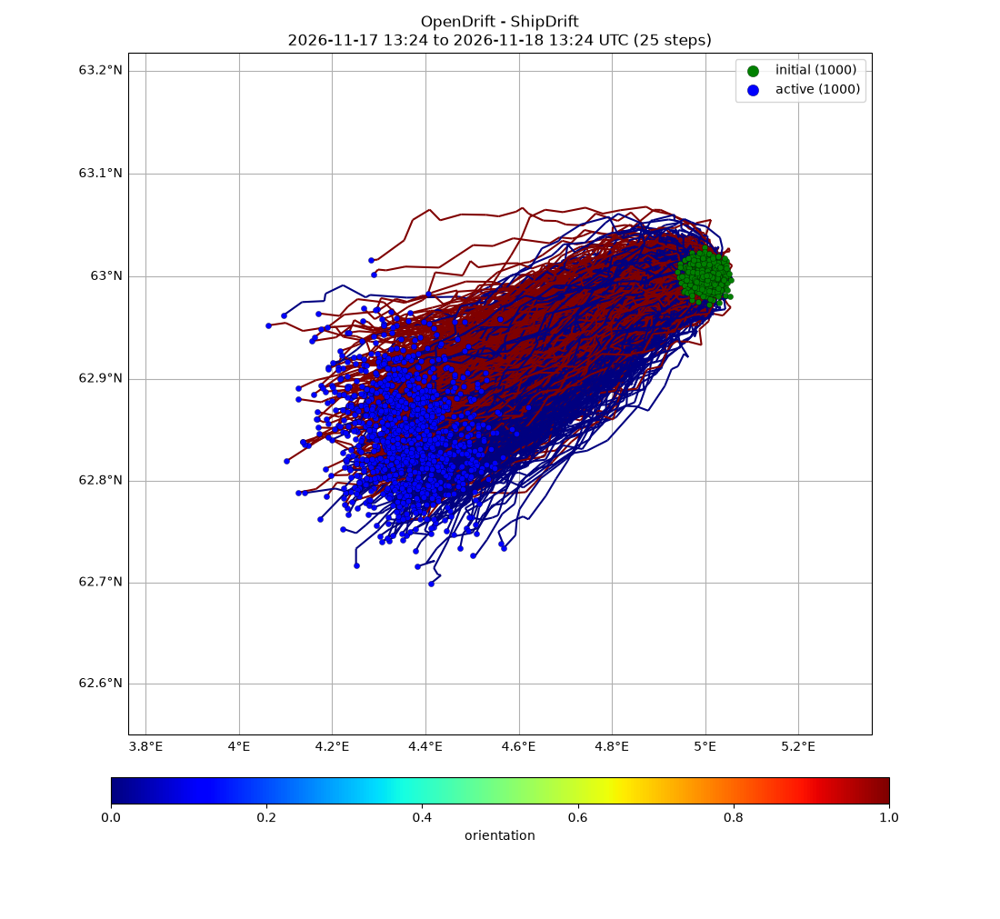
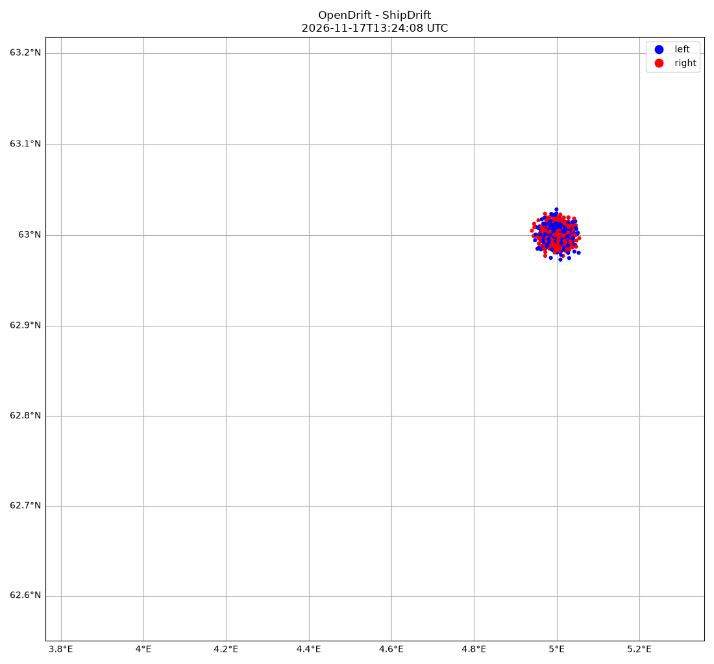

Note
Go to the end to download the full example code.
Ship drift
from datetime import datetime
from opendrift.models.shipdrift import ShipDrift
o = ShipDrift(loglevel=20)
o.add_readers_from_list([
'https://thredds.met.no/thredds/dodsC/cmems/topaz6/dataset-topaz6-arc-15min-3km-be.ncml',
'https://thredds.met.no/thredds/dodsC/mepslatest/meps_lagged_6_h_latest_2_5km_latest.nc',
'https://thredds.met.no/thredds/dodsC/cmems/mywavewam3km/dataset-wam-arctic-1hr3km-be.ncml'
])
13:24:08 INFO opendrift:579: OpenDriftSimulation initialised (version 1.14.11 / v1.14.12-91-g231396a)
Seed ship elements at defined position and time Note: beam/length ratio is larger than allowed, but is then clipped internally
o.seed_elements(lon=5.0, lat=63.0, radius=1000, number=1000,
time=datetime.now(),
length=80.0, beam=20.0, height=9.0, draft=4.0)
13:24:08 WARNING opendrift.models.shipdrift:180: Ratio of beam to length should be in range 0.12 to 0.18, given range is 0.25-0.25. Using border value.
13:24:08 INFO opendrift.models.basemodel.environment:204: Adding a global landmask from GSHHG
13:24:14 INFO opendrift.models.basemodel.environment:238: Fallback values will be used for the following variables which have no readers:
13:24:14 INFO opendrift.models.basemodel.environment:241: horizontal_diffusivity: 100.000000
13:24:14 INFO opendrift.models.basemodel.environment:241: sea_surface_wave_stokes_drift_x_velocity: 0.000000
13:24:14 INFO opendrift.models.basemodel.environment:241: sea_surface_wave_stokes_drift_y_velocity: 0.000000
13:24:14 INFO opendrift.models.basemodel.environment:241: sea_surface_wave_significant_height: 0.000000
13:24:14 INFO opendrift.models.basemodel.environment:241: sea_surface_wave_mean_period_from_variance_spectral_density_second_frequency_moment: 0.000000
Running model
o.run(steps=24, stop_on_error=True)
13:24:14 INFO opendrift:1932: Storing previous values of element property lon because of condition (('general:coastline_action', 'in', ['stranding', 'previous']), 'or', ('general:seafloor_action', 'in', ['previous']))
13:24:14 INFO opendrift:1932: Storing previous values of element property lat because of condition (('general:coastline_action', 'in', ['stranding', 'previous']), 'or', ('general:seafloor_action', 'in', ['previous']))
13:24:14 INFO opendrift:968: Using existing reader for land_binary_mask to move elements to ocean
13:24:14 INFO opendrift:1000: All points are in ocean
13:24:14 INFO opendrift:2248: 2026-11-17 13:24:08.563637 - step 1 of 24 - 1000 active elements (0 deactivated)
13:24:14 INFO opendrift.readers:67: Opening file with xr.open_dataset
13:24:18 INFO opendrift.readers.reader_netCDF_CF_generic:340: Detected dimensions: {'x': 'x', 'y': 'y', 'time': 'time'}
13:24:18 INFO opendrift.readers:67: Opening file with xr.open_dataset
13:24:18 INFO opendrift.readers.reader_netCDF_CF_generic:340: Detected dimensions: {'time': 'time', 'x': 'x', 'y': 'y'}
13:24:18 INFO opendrift.readers:67: Opening file with xr.open_dataset
13:24:22 INFO opendrift.readers.reader_netCDF_CF_generic:340: Detected dimensions: {'y': 'rlat', 'x': 'rlon', 'time': 'time'}
13:24:24 WARNING opendrift.readers.interpolation.structured:63: Ensemble data currently not extrapolated towards seafloor
13:24:24 WARNING opendrift.readers.interpolation.structured:63: Ensemble data currently not extrapolated towards seafloor
13:24:24 WARNING opendrift.readers.interpolation.structured:63: Ensemble data currently not extrapolated towards seafloor
13:24:24 WARNING opendrift.readers.interpolation.structured:63: Ensemble data currently not extrapolated towards seafloor
13:24:26 INFO opendrift.models.shipdrift:310: Using Stokes drift direction as wave direction
13:24:26 INFO opendrift:2248: 2026-11-17 14:24:08.563637 - step 2 of 24 - 1000 active elements (0 deactivated)
13:24:28 WARNING opendrift.readers.interpolation.structured:63: Ensemble data currently not extrapolated towards seafloor
13:24:28 WARNING opendrift.readers.interpolation.structured:63: Ensemble data currently not extrapolated towards seafloor
13:24:29 INFO opendrift.models.shipdrift:310: Using Stokes drift direction as wave direction
13:24:29 INFO opendrift:2248: 2026-11-17 15:24:08.563637 - step 3 of 24 - 1000 active elements (0 deactivated)
13:24:31 WARNING opendrift.readers.interpolation.structured:63: Ensemble data currently not extrapolated towards seafloor
13:24:31 WARNING opendrift.readers.interpolation.structured:63: Ensemble data currently not extrapolated towards seafloor
13:24:33 INFO opendrift.models.shipdrift:310: Using Stokes drift direction as wave direction
13:24:33 INFO opendrift:2248: 2026-11-17 16:24:08.563637 - step 4 of 24 - 1000 active elements (0 deactivated)
13:24:34 WARNING opendrift.readers.interpolation.structured:63: Ensemble data currently not extrapolated towards seafloor
13:24:34 WARNING opendrift.readers.interpolation.structured:63: Ensemble data currently not extrapolated towards seafloor
13:24:35 INFO opendrift.models.shipdrift:310: Using Stokes drift direction as wave direction
13:24:35 INFO opendrift:2248: 2026-11-17 17:24:08.563637 - step 5 of 24 - 1000 active elements (0 deactivated)
13:24:37 WARNING opendrift.readers.interpolation.structured:63: Ensemble data currently not extrapolated towards seafloor
13:24:37 WARNING opendrift.readers.interpolation.structured:63: Ensemble data currently not extrapolated towards seafloor
13:24:38 INFO opendrift.models.shipdrift:310: Using Stokes drift direction as wave direction
13:24:38 INFO opendrift:2248: 2026-11-17 18:24:08.563637 - step 6 of 24 - 1000 active elements (0 deactivated)
13:24:39 WARNING opendrift.readers.interpolation.structured:63: Ensemble data currently not extrapolated towards seafloor
13:24:39 WARNING opendrift.readers.interpolation.structured:63: Ensemble data currently not extrapolated towards seafloor
13:24:40 INFO opendrift.models.shipdrift:310: Using Stokes drift direction as wave direction
13:24:40 INFO opendrift:2248: 2026-11-17 19:24:08.563637 - step 7 of 24 - 1000 active elements (0 deactivated)
13:24:42 WARNING opendrift.readers.interpolation.structured:63: Ensemble data currently not extrapolated towards seafloor
13:24:42 WARNING opendrift.readers.interpolation.structured:63: Ensemble data currently not extrapolated towards seafloor
13:24:43 INFO opendrift.models.shipdrift:310: Using Stokes drift direction as wave direction
13:24:43 INFO opendrift:2248: 2026-11-17 20:24:08.563637 - step 8 of 24 - 1000 active elements (0 deactivated)
13:24:45 WARNING opendrift.readers.interpolation.structured:63: Ensemble data currently not extrapolated towards seafloor
13:24:45 WARNING opendrift.readers.interpolation.structured:63: Ensemble data currently not extrapolated towards seafloor
13:24:46 INFO opendrift.models.shipdrift:310: Using Stokes drift direction as wave direction
13:24:46 INFO opendrift:2248: 2026-11-17 21:24:08.563637 - step 9 of 24 - 1000 active elements (0 deactivated)
13:24:48 WARNING opendrift.readers.interpolation.structured:63: Ensemble data currently not extrapolated towards seafloor
13:24:48 WARNING opendrift.readers.interpolation.structured:63: Ensemble data currently not extrapolated towards seafloor
13:24:49 INFO opendrift.models.shipdrift:310: Using Stokes drift direction as wave direction
13:24:49 INFO opendrift:2248: 2026-11-17 22:24:08.563637 - step 10 of 24 - 1000 active elements (0 deactivated)
13:24:51 WARNING opendrift.readers.interpolation.structured:63: Ensemble data currently not extrapolated towards seafloor
13:24:51 WARNING opendrift.readers.interpolation.structured:63: Ensemble data currently not extrapolated towards seafloor
13:24:52 INFO opendrift.models.shipdrift:310: Using Stokes drift direction as wave direction
13:24:52 INFO opendrift:2248: 2026-11-17 23:24:08.563637 - step 11 of 24 - 1000 active elements (0 deactivated)
13:24:54 WARNING opendrift.readers.interpolation.structured:63: Ensemble data currently not extrapolated towards seafloor
13:24:54 WARNING opendrift.readers.interpolation.structured:63: Ensemble data currently not extrapolated towards seafloor
13:24:55 INFO opendrift.models.shipdrift:310: Using Stokes drift direction as wave direction
13:24:55 INFO opendrift:2248: 2026-11-18 00:24:08.563637 - step 12 of 24 - 1000 active elements (0 deactivated)
13:24:57 WARNING opendrift.readers.interpolation.structured:63: Ensemble data currently not extrapolated towards seafloor
13:24:57 WARNING opendrift.readers.interpolation.structured:63: Ensemble data currently not extrapolated towards seafloor
13:24:58 INFO opendrift.models.shipdrift:310: Using Stokes drift direction as wave direction
13:24:58 INFO opendrift:2248: 2026-11-18 01:24:08.563637 - step 13 of 24 - 1000 active elements (0 deactivated)
13:25:00 WARNING opendrift.readers.interpolation.structured:63: Ensemble data currently not extrapolated towards seafloor
13:25:00 WARNING opendrift.readers.interpolation.structured:63: Ensemble data currently not extrapolated towards seafloor
13:25:01 INFO opendrift.models.shipdrift:310: Using Stokes drift direction as wave direction
13:25:01 INFO opendrift:2248: 2026-11-18 02:24:08.563637 - step 14 of 24 - 1000 active elements (0 deactivated)
13:25:02 WARNING opendrift.readers.interpolation.structured:63: Ensemble data currently not extrapolated towards seafloor
13:25:02 WARNING opendrift.readers.interpolation.structured:63: Ensemble data currently not extrapolated towards seafloor
13:25:04 INFO opendrift.models.shipdrift:310: Using Stokes drift direction as wave direction
13:25:04 INFO opendrift:2248: 2026-11-18 03:24:08.563637 - step 15 of 24 - 1000 active elements (0 deactivated)
13:25:06 WARNING opendrift.readers.interpolation.structured:63: Ensemble data currently not extrapolated towards seafloor
13:25:06 WARNING opendrift.readers.interpolation.structured:63: Ensemble data currently not extrapolated towards seafloor
13:25:07 INFO opendrift.models.shipdrift:310: Using Stokes drift direction as wave direction
13:25:07 INFO opendrift:2248: 2026-11-18 04:24:08.563637 - step 16 of 24 - 1000 active elements (0 deactivated)
13:25:09 WARNING opendrift.readers.interpolation.structured:63: Ensemble data currently not extrapolated towards seafloor
13:25:09 WARNING opendrift.readers.interpolation.structured:63: Ensemble data currently not extrapolated towards seafloor
13:25:11 INFO opendrift.models.shipdrift:310: Using Stokes drift direction as wave direction
13:25:11 INFO opendrift:2248: 2026-11-18 05:24:08.563637 - step 17 of 24 - 1000 active elements (0 deactivated)
13:25:13 WARNING opendrift.readers.interpolation.structured:63: Ensemble data currently not extrapolated towards seafloor
13:25:13 WARNING opendrift.readers.interpolation.structured:63: Ensemble data currently not extrapolated towards seafloor
13:25:14 INFO opendrift.models.shipdrift:310: Using Stokes drift direction as wave direction
13:25:14 INFO opendrift:2248: 2026-11-18 06:24:08.563637 - step 18 of 24 - 1000 active elements (0 deactivated)
13:25:16 WARNING opendrift.readers.interpolation.structured:63: Ensemble data currently not extrapolated towards seafloor
13:25:16 WARNING opendrift.readers.interpolation.structured:63: Ensemble data currently not extrapolated towards seafloor
13:25:16 INFO opendrift.models.shipdrift:310: Using Stokes drift direction as wave direction
13:25:17 INFO opendrift:2248: 2026-11-18 07:24:08.563637 - step 19 of 24 - 1000 active elements (0 deactivated)
13:25:18 WARNING opendrift.readers.interpolation.structured:63: Ensemble data currently not extrapolated towards seafloor
13:25:18 WARNING opendrift.readers.interpolation.structured:63: Ensemble data currently not extrapolated towards seafloor
13:25:20 INFO opendrift.models.shipdrift:310: Using Stokes drift direction as wave direction
13:25:20 INFO opendrift:2248: 2026-11-18 08:24:08.563637 - step 20 of 24 - 1000 active elements (0 deactivated)
13:25:21 WARNING opendrift.readers.interpolation.structured:63: Ensemble data currently not extrapolated towards seafloor
13:25:21 WARNING opendrift.readers.interpolation.structured:63: Ensemble data currently not extrapolated towards seafloor
13:25:22 INFO opendrift.models.shipdrift:310: Using Stokes drift direction as wave direction
13:25:22 INFO opendrift:2248: 2026-11-18 09:24:08.563637 - step 21 of 24 - 1000 active elements (0 deactivated)
13:25:24 WARNING opendrift.readers.interpolation.structured:63: Ensemble data currently not extrapolated towards seafloor
13:25:24 WARNING opendrift.readers.interpolation.structured:63: Ensemble data currently not extrapolated towards seafloor
13:25:25 INFO opendrift.models.shipdrift:310: Using Stokes drift direction as wave direction
13:25:25 INFO opendrift:2248: 2026-11-18 10:24:08.563637 - step 22 of 24 - 1000 active elements (0 deactivated)
13:25:27 WARNING opendrift.readers.interpolation.structured:63: Ensemble data currently not extrapolated towards seafloor
13:25:27 WARNING opendrift.readers.interpolation.structured:63: Ensemble data currently not extrapolated towards seafloor
13:25:28 INFO opendrift.models.shipdrift:310: Using Stokes drift direction as wave direction
13:25:28 INFO opendrift:2248: 2026-11-18 11:24:08.563637 - step 23 of 24 - 1000 active elements (0 deactivated)
13:25:30 WARNING opendrift.readers.interpolation.structured:63: Ensemble data currently not extrapolated towards seafloor
13:25:30 WARNING opendrift.readers.interpolation.structured:63: Ensemble data currently not extrapolated towards seafloor
13:25:31 INFO opendrift.models.shipdrift:310: Using Stokes drift direction as wave direction
13:25:31 INFO opendrift:2248: 2026-11-18 12:24:08.563637 - step 24 of 24 - 1000 active elements (0 deactivated)
13:25:34 WARNING opendrift.readers.interpolation.structured:63: Ensemble data currently not extrapolated towards seafloor
13:25:34 WARNING opendrift.readers.interpolation.structured:63: Ensemble data currently not extrapolated towards seafloor
13:25:35 INFO opendrift.models.shipdrift:310: Using Stokes drift direction as wave direction
Print and plot results
print(o)
o.plot(linecolor='orientation')
#o.animation(color='orientation', markersize=20, filename="orientation.gif", legend=['left','right'],colorbar=False,cmap='bwr')
o.animation(color='orientation', legend=['left','right'], markersize=20, colorbar=False, cmap='bwr')

===========================
--------------------
Reader performance:
--------------------
global_landmask
0:00:00.0 total
0:00:00.0 preparing
0:00:00.0 reading
0:00:00.0 masking
--------------------
https://thredds.met.no/thredds/dodsC/cmems/topaz6/dataset-topaz6-arc-15min-3km-be.ncml
0:00:29.7 total
0:00:00.0 preparing
0:00:29.7 reading
0:00:00.0 interpolation
0:00:00.0 interpolation_time
0:00:00.0 rotating vectors
0:00:00.0 masking
--------------------
https://thredds.met.no/thredds/dodsC/mepslatest/meps_lagged_6_h_latest_2_5km_latest.nc
0:00:14.6 total
0:00:00.0 preparing
0:00:14.5 reading
0:00:00.2 interpolation
0:00:00.0 interpolation_time
0:00:00.0 rotating vectors
0:00:00.0 masking
--------------------
https://thredds.met.no/thredds/dodsC/cmems/mywavewam3km/dataset-wam-arctic-1hr3km-be.ncml
0:00:27.3 total
0:00:00.0 preparing
0:00:27.2 reading
0:00:00.0 interpolation
0:00:00.0 interpolation_time
0:00:00.0 rotating vectors
0:00:00.0 masking
--------------------
Performance:
1:26.6 total time
5.5 configuration
0.0 preparing main loop
0.0 moving elements to ocean
1:21.0 main loop
0.3 updating elements
0.0 cleaning up
--------------------
===========================
Model: ShipDrift (OpenDrift version 1.14.11)
1000 active ShipObject particles (0 deactivated, 0 scheduled)
-------------------
Environment variables:
-----
land_binary_mask
1) global_landmask
-----
x_sea_water_velocity
y_sea_water_velocity
1) https://thredds.met.no/thredds/dodsC/cmems/topaz6/dataset-topaz6-arc-15min-3km-be.ncml
-----
x_wind
y_wind
1) https://thredds.met.no/thredds/dodsC/mepslatest/meps_lagged_6_h_latest_2_5km_latest.nc
-----
sea_surface_wave_mean_period_from_variance_spectral_density_second_frequency_moment
sea_surface_wave_significant_height
sea_surface_wave_stokes_drift_x_velocity
sea_surface_wave_stokes_drift_y_velocity
1) https://thredds.met.no/thredds/dodsC/cmems/mywavewam3km/dataset-wam-arctic-1hr3km-be.ncml
-----
Readers not added for the following variables:
horizontal_diffusivity
Discarded readers:
Time:
Start: 2026-11-17 13:24:08.563637 UTC
Present: 2026-11-18 13:24:08.563637 UTC
Calculation steps: 24 * 1:00:00 - total time: 1 day, 0:00:00
Output steps: 25 * 1:00:00
===========================
13:25:45 INFO opendrift:4899: Saving animation to /root/project/docs/source/gallery/animations/example_shipdrift_0.gif...
13:25:52 INFO opendrift:3307: Time to make animation: 0:00:08.413682

Total running time of the script: (1 minutes 52.653 seconds)